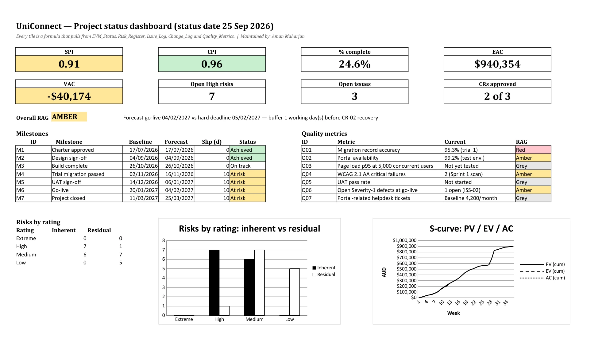
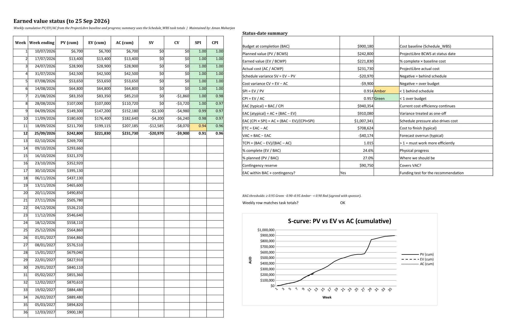
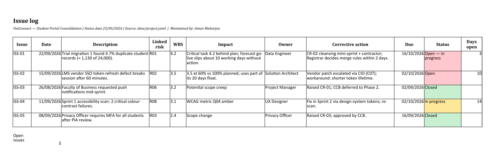

Monitoring, control and closure
Where we're at against the baseline on 25 September, why we're behind, and how we'll close the project.
Dashboard


Earned value at 25 Sep 2026
| Measure | Value | Meaning |
|---|---|---|
| Planned value (PV) | $242,800 | Work we planned to finish by 25 Sep |
| Earned value (EV) | $221,830 | Value of the work we actually did |
| Actual cost (AC) | $231,730 | What we've spent so far |
| Schedule variance (SV) | -$20,970 | We're behind schedule |
| Cost variance (CV) | -$9,900 | We're over budget |
| SPI | 0.914 Amber | We get 91 cents of work for every planned dollar |
| CPI | 0.957 Green | We get 96 cents of value for every dollar spent |
| EAC = BAC/CPI | $940,354 | Forecast total cost |
| EAC (CPI × SPI) | $1,007,341 | Worst case, if the schedule pressure keeps going |
| VAC | -$40,174 | Forecast overrun |
| TCPI | 1.015 | How efficient we need to be to finish on budget |


We're 24.6% done against 27.0% planned. The schedule variance comes almost all from critical task 4.2, plus 3.5 (which still has float). The cost variance comes from the extra effort on 2.3 and 4.1. The typical EAC goes about $40,000 over BAC, which the contingency covers. The worst-case EAC would need the management reserve, so SPI has to recover quickly.
Issues and corrective actions
| ID | Issue | Risk | WBS | Owner | Corrective action | Due | Status |
|---|---|---|---|---|---|---|---|
| ISS-01 | Trial migration 1 found 4.7% duplicate student records (≈ 1,130 of 24,000). | R01 | 4.2 | Data Engineer | CR-02 cleansing mini-sprint + contractor; Registrar decides merge rules within 2 days. | 16 Oct 2026 | Open: in progress |
| ISS-02 | LMS vendor SSO token-refresh defect breaks session after 60 minutes. | R02 | 3.5 | Solution Architect | Vendor patch escalated via CIO (C07); workaround: shorter token lifetime. | 2 Oct 2026 | Open |
| ISS-03 | Faculty of Business requested push notifications mid-sprint. | R06 | 3.2 | Project Manager | Raised CR-01; CCB deferred to Phase 2. | 2 Sep 2026 | Closed |
| ISS-04 | Sprint 1 accessibility scan: 2 critical colour-contrast failures. | R08 | 3.1 | UX Designer | Fix in Sprint 2 via design-system tokens; re-scan. | 2 Oct 2026 | In progress |
| ISS-05 | Privacy Officer requires MFA for all students after PIA review. | R03 | 2.4 | Privacy Officer | Raised CR-03; approved by CCB. | 16 Sep 2026 | Closed |


Closure
Closure checklist
| Item | Owner | Status |
|---|---|---|
| All deliverables accepted against acceptance criteria | Project Manager | Not started |
| Registrar sign-off on final migration reconciliation | Academic Registrar | Not started |
| UAT, security and WCAG reports archived | Test Lead | Not started |
| Legacy portals decommissioned and data archived per retention schedule | Solution Architect | Not started |
| Privacy Officer confirms non-production data destroyed | Privacy Officer | Not started |
| Vendor contracts closed; contractor access revoked | Finance Office | Not started |
| Final cost reconciliation vs budget; unused reserves returned | Project Manager | Not started |
| Handover to BAU support (runbooks, knowledge base, SLAs) | Development Lead | Not started |
| Benefits realisation plan handed to sponsor | Sponsor | Not started |
| Lessons learned workshop held and register published | Project Manager | In progress (captured each sprint) |
| Trello board archived; ProjectLibre final actuals saved | Project Manager | Not started |
| Team released and recognised | Project Manager | Not started |
| Closure report approved by steering committee (M7) | Sponsor | Not started |
Benefits realisation
| Benefit | KPI | Baseline → target | Measure by | Owner |
|---|---|---|---|---|
| Fewer helpdesk tickets | Portal-related tickets per month | 4,200 → ≤ 2,940 (−30%) | 30 Apr 2027 | IT Service Desk Manager |
| Single login | % of students using SSO + MFA | 0% → ≥ 95% | 31 Mar 2027 | CIO |
| Legacy cost savings | Annual licence + support cost of legacy portals | $140k/yr → $0 after decommissioning | 30 Jun 2027 | Finance Office |
| Data quality | Duplicate student records | 4.7% (trial 1) → < 0.5% | 31 Mar 2027 | Academic Registrar |
| Student experience | Portal satisfaction (survey, 1–5) | 2.9 → ≥ 4.0 | 31 May 2027 | DVC (Education) |
Lessons learned
| ID | What happened | Impact | Recommendation |
|---|---|---|---|
| L1 | Data profiling in 2.1 sampled only 5% of records. | Duplicates found late (ISS-01), on the critical path. | Profile 100% of keys before mapping; make data quality a gate at M2. |
| L2 | LMS SSO proof of concept ran inside Sprint 1. | Token defect (ISS-02) surfaced early enough to use float. | Keep technical spikes before dependent sprints. |
| L3 | Faculty feature requests arrived informally. | Risk of scope creep (CR-01). | Publish the CCB process in the charter and at every faculty briefing. |
| L4 | Accessibility scans ran from Sprint 1. | Contrast failures fixed cheaply (ISS-04). | Automate WCAG scans in the build pipeline. |
| L5 | EVM reported weekly from week 4. | SPI drop visible within a week of ISS-01. | Keep weekly EVM with RAG thresholds agreed by the sponsor. |
| L6 | Contingency reserve was sized from risk EMVs. | CR-02 was funded without new approval. | Link each reserve dollar to a named risk. |
| L7 | Privacy Officer joined the CCB. | MFA decision (CR-03) made in one week. | Include compliance roles on the CCB from initiation. |
Links to other pages
- Schedule: the baseline we measure the variances against
- Risk: ISS-01 came from R01
- Recommendation: the variances drive the verdict
What we decided
SPI 0.91 needs action from management now, but CPI 0.96 just needs watching. We report daily reconciliation rates until SPI is back above 0.95.